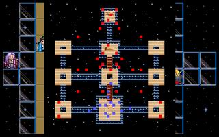

第二十章 封印

 雷特
雷特 米兰
米兰 克隆
克隆 艾利欧
艾利欧 巴拉多
巴拉多 洛加
洛加 希瓦那
希瓦那 卡里斯
卡里斯 莱特
莱特 凯亚
凯亚 莉娜
莉娜 索尼克
索尼克 红武圣
红武圣 蓝武圣
蓝武圣 黑武圣
黑武圣
本关敌人：
LV20 大邪神 （HP18000,AP800,DP350,HIT250,EV60,MV3,灭魂碎,爆龙炎,轰雷落,再生术）
LV18 魔神之子x3 （HP5000,AP380,DP280,HIT152,EV52,MV6,爆龙炎）
 LV15 大恶魔x12 （HP640,AP290,DP170,HIT125,EV45,MV5,烈击弹）
LV15 大恶魔x12 （HP640,AP290,DP170,HIT125,EV45,MV5,烈击弹）
 LV12 恶魔x12 （HP400,AP248,DP86,HIT104,EV24,MV5,火流星）
LV12 恶魔x12 （HP400,AP248,DP86,HIT104,EV24,MV5,火流星）
LV15 魔人x4 （HP400,AP320,DP185,HIT140,EV60,MV5,圣光弹,再生术）
胜利条件：敌人全灭
失败条件：雷特死亡
战后报酬：
无
攻略简要：
一开始先将人员集中在最下方，等消灭分批前来的恶魔后，再来一一处理停着不动的敌人。大邪神先消耗他的法术后，才开始围攻，不过要打蛮久的，需要有点耐心。
战后商店道具:
无
剧情对话：
莉娜:好浓厚的邪恶之气...
黑武圣:我们已经到达封印大邪神所在的封印洞窟了,有这么强的邪气,就表示大邪神已经快复活了...
雷特:各位,这场战斗可能极为惨烈,若是你们...
克隆:殿下!老臣当初无法随护在先王周遭奋战致死,一直使我引以为疚，如今无论如何,我一定会以性命来保护殿下的!
艾利欧:我说雷特...殿下,我们在一起已经这么久了哪次不是一起同甘共苦的呢?不用替我们担心这么多啦,我还打算多活几十年哩!当然不会这么容易完蛋的!
巴拉多:嘿...艾利欧说得没错.我巴拉多好歹也经过了无数次的战役,冲锋陷阵可是我的看家本领,殿下就不用担心了!
洛加:安妮离我们而去,使我了解到,只要一天不将魔族平定,就很可能在发生相同的悲剧,而人类也永远无安宁之日，就让我替去世的安妮尽点心意吧!
希瓦那:殿下!我拉吉家族的男人,都以身为罗特帝亚王国的骑士为荣，而如今能为殿下效命,与殿下并肩作战,更是我生平莫大的荣幸!
卡里斯:我原本只是个漂泊的浪子,没有什么生命的目标，虽然能随遇而安,但总是感觉失落了些什么...如今追随殿下一路作战,是我再度有了充实感,感到人生不虚此行.
莱特:殿下,我原本就是为了锻链,来提升自己的能力而战,如今有这种传说中的魔王当对手,我可真是求之不得呢!怎么能错过?
凯亚:当初殿下对我有救命之恩,如今我正好尽力报答!
莉娜:那时你救了我,我就说过一定要协助你复国,直到你完成心愿为止.现在就让我帮你达成心愿吧!
索尼克:大邪神即将复活,老夫自然不能坐视不管,让天下苍生遭到这场浩劫.
雷特:...多...多谢大家...米兰,你怎么呢?
米兰:雷...雷特大哥!我...不论到天涯海角,我都一定会跟着你!
雷特:!...米兰...
红武圣:嘿!看来这小子颇得人心!
黑武圣:嗯,他将来应该可以成为一个好国王...这样我们就可以安心地施展封印法术了...
蓝武圣:唔...大邪神好象已经复活了...
大邪神:哇哈哈哈哈...我再度复活了!哈哈哈!
红武圣:大邪神!我们会再度把你打回地狱的!
大邪神:喔?...又是你们三个?带着一群卑微的低贱人类就妄想能打败我吗?
黑武圣:想当年为了将你封印,牺牲了我族无数的人命,就连我们最亲爱的人,也被你们魔族所害..若今日让你再度复活,那我岂不是对不起那些舍弃生命,将你封印的人们吗?
大邪神:嗯哼...我倒是很欣赏你们的执着...嘿嘿...为了表示我对你们在垂死之前的一点心意,就让我的儿子们和你们见见面吧!
艾利欧:大邪神有儿子?他不是被封印住了吗?怎么会有儿子?
蓝武圣:看来他是施展了秘传的妖咒大法,以自己的肉体所造出来的分身...
黑武圣:这些以法术造出来的分身,虽然能力略逊本体,但是它们的能力仍然十分强大,千万不可轻忽!
大邪神:嘿...难得你们能够知道这么多,也是相当不简单的了!
雷特:哼!不论敌人有多强,我们都不会因此而退缩的!
大邪神:嘿嘿嘿...想不到人类面对着我,也会有如此的勇气...呵呵呵!好吧!让我送你们到原先我们一族所在的地方,看看你们到时恐惧的样子!
艾利欧:喔...这...这是什么地方?为什么一片漆黑?
黑武圣:不好!他将我们传送到魔界的最深处--虚空界了!
索尼克:好可怕的魔力!能在一瞬闲将这么多人传送到另一个世界!
米兰:那...那我们会被困在这个地方,永远无法回到原来的世界吗?
大邪神:嘿嘿嘿...
希瓦那:啊!大邪神从远处出现了!
大邪神:我可不会那么有耐心,看着你们自己慢慢饿死的...若不将你们亲手碎尸万段可是难消我被封印这么久的怒气!
雷特:小心!四周出现了一大堆的魔族向我们冲来了!
打败了大邪神、魔神之子、魔人。
雷特:成功了!我们终于击倒大邪神了!
蓝武圣:不...目前只能算是暂时将他击败罢了，但是若不加以封印的话,只要让元气一回复,还是会再度复活的!
米兰:那要如何将他封印住呢?一般的封印法术大概无法禁锢得住大邪神啊!
蓝武圣:...如今的方法,就是和当初一样,再造出一个封印...也就是像我们六个人造出雷特一族的先祖一样...
艾利欧:咦!等...等一下!你们不是说除了你们之外其它的伙伴都牺牲了?怎么在封印时还会有六个人?而且照这样说来,那你们其它三名伙伴的下落呢?
蓝武圣:事实上,我们和大邪神的战斗中,是损失了六名伙伴，其它的三名伙伴,则是为了造出封印而牺牲的...
索尼克:...莫非...你们是使用『御灵封魔』禁咒大法来造出封印的?这...
米兰:『御灵封魔』大法这不是在古书上记载,力量最强的封印法?不过施咒的方法早已失传...
黑武圣:这法术原本就是由我们传入到这个世界的,但是必须付出相当的代价,所以我们并不打算流传下来.
索尼克:这代价...就是施法者也会牺牲...
红武圣:不错!施展『御灵封魔』大法时必须要有三名施法者,将他们的灵魂与力量合而为一,以造出具有生命的活封印.因为这种具有生命意志的活封印,其力量要远比一般以法力造成的封印强大许多，只要『他』存在一天,封印的力量就会永远存在...
蓝武圣:而雷特他们一族,则变成了以传宗接代的方法,将封印的力量永远持续下去，也就是说,只要封印化为人类后,他只要能够维持该族的繁衍,封印就可以一直存在.要封印具有强大力量且永远不灭的大邪神,非用这种方法不可...
雷特:但是...三名施法者...莫非你们要...
黑武圣:...没错...当初封印的时候,我们的伙伴为了它而牺牲,其中也包括了我最挚爱的人在内...我们约定誓言,就是牺牲自己的生命,也要永远守护住封印.现在,为了不让大邪神再度复活我们决定依照当初的约定以自己的生命,来再度封印住大邪神.除此之外,也没有别的方法了...
雷特:我...实在很抱歉...在禁地的时候,我还一度被达克妮丝所煽动,想要怀疑你们的动机...我...我实在...
蓝武圣:罢了,雷特.从今天起,你们一族传承封印的使命已经完成,而你也可以成为一个真正的人类了...现在,我们有一件事交待你,希望你肯帮忙.你能答应吗?
雷特:三位为了我们世界的安全劳累了这么久,甚至还为了我们牺牲..我如果能替你们做任何事情,自然是万份乐意!
蓝武圣:那就好...在施展『御灵封魔』大法后,我们的形体虽然会随之消逝,但是灵魂会合而为一,成为一个初生的婴儿,就如同当初你的先祖一样.我们就是希望你能好好地照顾『他』,并使他能够安然地繁衍下去,这样才能永远地封住大邪神.
黑武圣:当初我们的伙伴化为封印之后,我们一看到他,就会想到他是我们的伙伴所转生的,所以倍觉亲切,待他有如自己的儿子，就像现在看到你,还是会有那一份亲切感.
红武圣:就像你手上那把炎龙剑就是我们那三名伙伴之一所拥有的,所以在禁地时,你会感应到它的存在,就是你的灵魂中,仍有一部分是它主人,所以它会呼唤你,就是因为这个缘故.
黑武圣:希望你在我们化为封印之后,也能将他当作自己的儿子,如此我们也就可以了无遗憾了...
雷特:你们放心!我雷特对天发誓,只要我罗特帝亚王国存在一天,就一定会尽全力来保护新的封印一族，而且我和米兰会好好地待他,就如同自己的儿子一样.
米兰:雷特大哥...
红武圣:很好!很好!豪迈的个性,真的和你的先祖一模一样!好啦,伙伴们,我们也该开始了，不然时间一过,想要再封印大邪神可就难了...
蓝武圣:嗯!要开始了,其它的人退后...高居在天之上的诸神啊!请听我们的祈求,将我们三人的生命、灵魂和力量,化为封印妖魔之力...
第二十章完
尾声
当雷特一行人醒来之时
发现他们已经回到了达拉尼亚岛
怀着复杂无比的心情
雷特缓缓地走回格菲迪城
在众人的拥戴中
雷特正式继任为
罗特帝亚王国的新国王
并与米兰共同举行盛大的婚礼
而讨伐军的众人
也纷纷得到丰盛的封爵及封赏
一年之后...
米兰:雷特大哥!我和仔仔在花园这里!
雷特:米兰!在这一年的时间中,亏你的细心帮忙,才能这么快地重建王国...
米兰:雷特大哥,这没什么啦,不过我有个秘密要悄悄地告诉你哦!
雷特:哦?是什么秘密呢?
米兰:...再过一段时间,仔仔他就有伴了!
雷特:咦!...难道...你已经有了?这...实在是太好了!
米兰:你想我们的儿子,到时和仔仔在一起玩时,哪一个会比较调皮呢?
雷特:这...我也不知道啦,不过我既然答应三武圣,要好好地照顾仔仔,就会把他当作自己的儿子一般.两个小家伙都调皮的话就一起打屁股!
米兰:嘻...
莉娜在亚姆山上
遥望着远处的夕阳
以及繁华的格菲迪城
心中的伤痛再度涌起
这时
一个熟悉的人影缓缓出现
莉娜:莱...莱特!你不是已经离开了吗?
莱特:莉娜...我...我这次回来是想问你一件事...
莉娜:是...是什么事呢?
莱特:我...想请你跟我一起走!
莉娜:你...也罢!就让我们结伴走向天涯海角忘却这里所发生的一切欢欣和悲伤吧!
莱特:...好!那我们走吧!
莉娜:...(别了,雷特...)
THE END